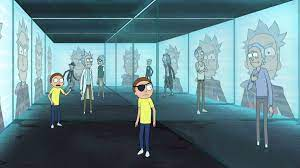
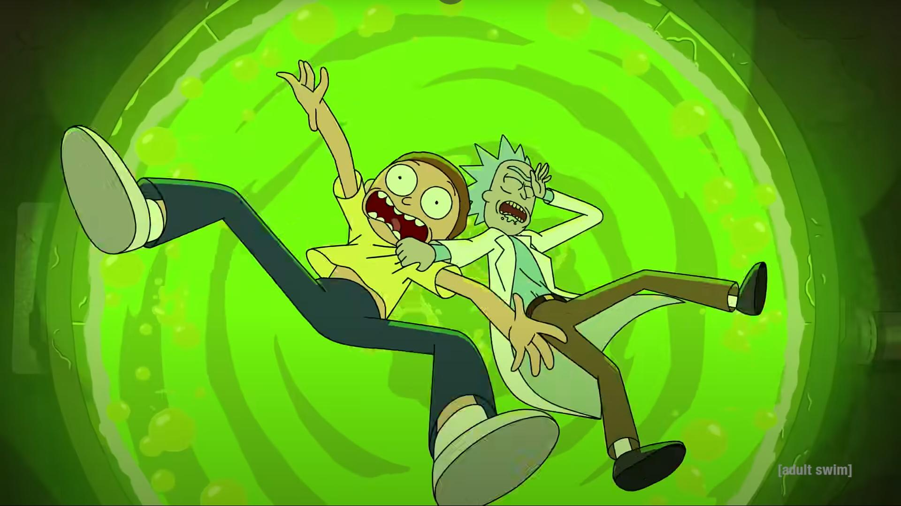
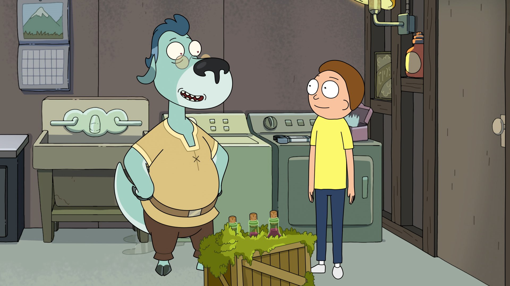
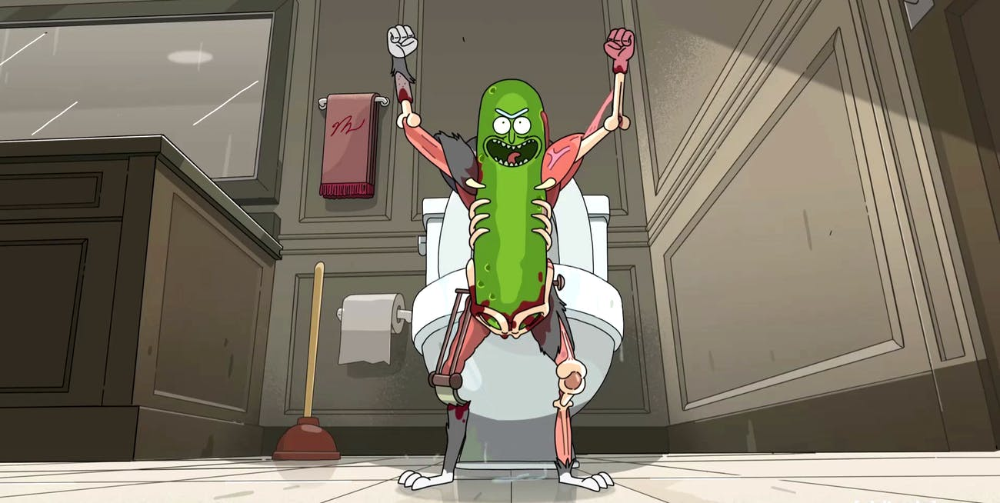

Unmortricken - S07E05
O quinto episódio da sétima temporada é o mais recente a aparecer na lista por um simples motivo: ele é um dos episódios mais importantes de todas as temporadas e é muito bom. Alé de Rick e Morty, suas variantes mais malvadas também aparecem no episódio.
IMDb:9.2

The Vat of Acid Episode - S04E08
Rick cria um dispositivo para Morty que faz "saves" na vida real. O neto então encontra uma garota, vive uma história de amor e também uma tragédia -- mas tudo acaba bem quando Jerry volta o save do filho. Ah sim, há um tonel de ácido falso que serve para uma lição de moral.
IMDb: 9.5

Mort Dinner Rick Andre - S05E1
Morty precisa de um lugar para envelhecer vinho e, enquanto Rick lida com seu arqui-inimigo Mr Nimbus, uma espécie de Namor que nunca tinha aparecido antes na série. Morty acaba provando algumas revoluções na outra dimensão e, eventualmente, Jessica acaba se tornando uma espécie de divindade.
IMDb: 9.0
